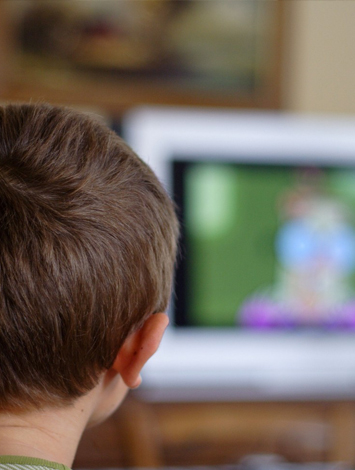

2
Les gens qui ne peuvent pas se comprendre entre eux ne peuvent pas échanger d’idées, ne peuvent pas communiquer, et les logiciels de traduction ont leurs limites.
La façon la plus simple de s’assurer que nous élevons des enfants instruits est de leur apprendre à lire et de leur montrer que la lecture est une activité agréable. Et cela signifie, à la base, trouver des livres qui leur plaisent, leur donner accès à ces livres et les laisser les lire.
Je ne crois pas qu’il existe de mauvais livre pour enfants. De temps en temps, la mode pousse des adultes à désigner une catégorie de livres pour enfants, un genre, peut-être, ou un auteur, et à déclarer que ce sont de mauvais livres, des livres qu’il faudrait empêcher les enfants de lire. J’ai vu ça se produire mainte et mainte fois ; on a déclaré qu’Enid Blyton était un mauvais auteur, R. L. Stine et des dizaines d’autres. On a reproché aux bandes dessinées de propager l’illettrisme.
C’est du pipeau. C’est du snobisme et de la sottise.
Il n’y a pas de mauvais auteurs pour enfants, des auteurs qui leurs plaisent, qu’ils veulent lire, qu’ils recherchent, parce que chaque enfant est différent. Les enfants savent trouver les histoires qu’ils ont besoin de trouver. Et c’est eux-mêmes qu’ils amènent aux histoires. Une idée éculée et désuète n’est pas pour eux éculée et désuète. C’est la première fois que l’enfant la rencontre. Ne découragez pas les enfants de lire parce que vous estimez qu’ils ne lisent pas ce qu’il faudrait. Une fiction qui vous déplaît sera la drogue d’appel vers d’autres livres, que vous préférerez peut-être. Et tout le monde n’a pas les mêmes goûts que vous.
Un adulte bien intentionné peu facilement détruire l’amour de la lecture chez un enfant :
Empêchez-le de lire ce qui lui plaît, ou donnez-lui des livres valables mais ennuyeux qui vous plaisent à vous, les équivalents XXIe siècle de la littérature « édifiante » victorienne. Vous vous retrouverez avec une génération convaincue que lire n’est pas cool et, ce qui est pire, pas agréable.
Nous avons besoin que nos enfants posent un pied sur l’échelle de la lecture : tout ce qu’ils aimeront lire les fera progresser vers le haut, un échelon après l’autre, vers l’instruction.
(Ne faites pas non plus comme l’auteur ici présent, lorsque sa fille de onze ans était fan de R. L. Stine, c’est-à-dire aller lui chercher un exemplaire du Carrie de Stephen King, en lui expliquant que, si elle avait aimé ceux-là, elle allait adorer celui-ci ! Pendant le reste de son adolescence, Holly n’a plus jamais lu que de paisibles histoires de colons dans les prairies, et elle me foudroie encore du regard chaque fois qu’on mentionne le nom de Stephen King.)
Deuxième rôle de la fiction, elle développe l’empathie. Quand vous regardez la télé ou un film, vous voyez des choses qui arrivent à d’autres gens. La fiction en prose est une construction que vous bâtissez à partir de vingt-six lettres et d’une poignée de signes de ponctuation ; vous et vous seul, en utilisant votre imagination, vous créez un monde, vous le peuplez et vous voyez par d’autres yeux. Vous avez l’occasion d’éprouver des choses, de visiter des lieux et des mondes que vous ne connaîtriez jamais autrement. Vous apprenez que tous les gens autour de vous sont des moi, eux aussi. Vous êtes quelqu’un d’autre et, lorsque vous regagnez votre propre monde, vous allez en être légèrement changé.
L’empathie est un outil qui construit des groupes à partir de gens, afin de nous permettre de fonctionner comme plus que de simples individus préoccupés d’eux-mêmes.
En lisant, on découvre également quelque chose d’une importance vitale pour se faire un chemin dans le monde. Et c’est cela :